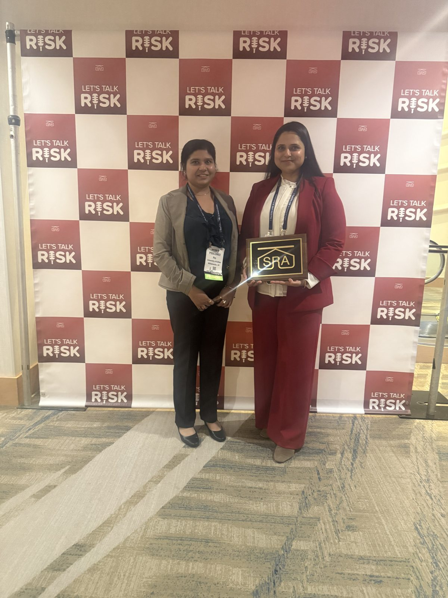
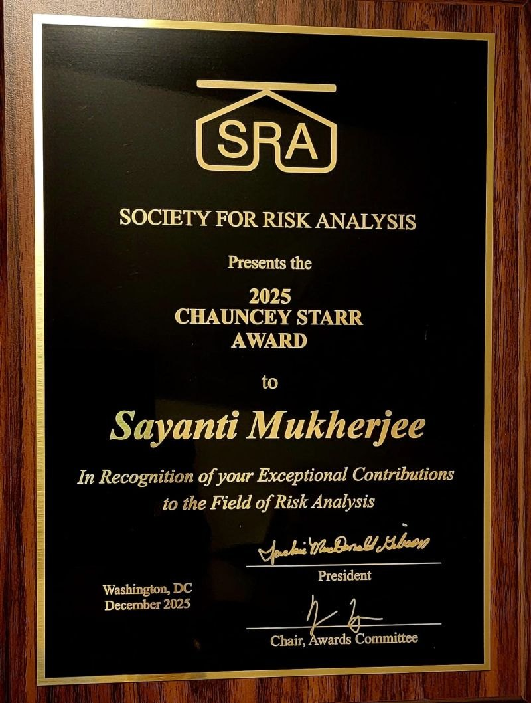
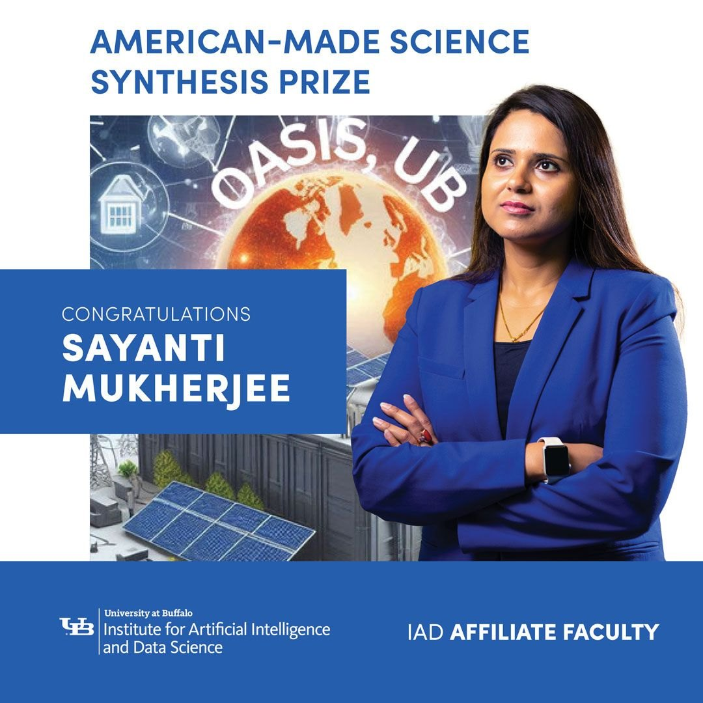
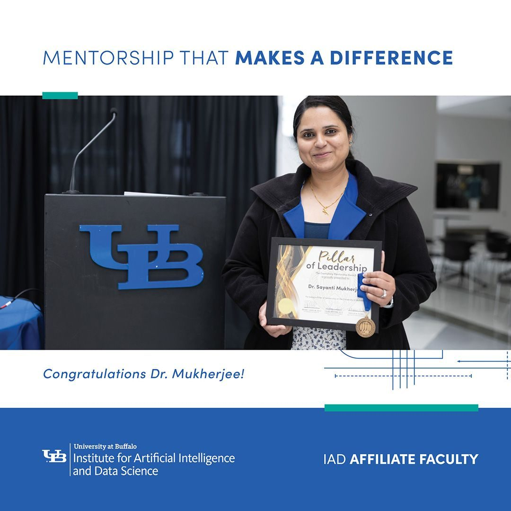
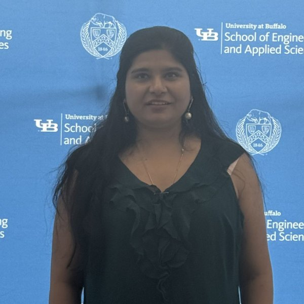

Get to know Sayanti Mukherjee
UBNow profiles Dr. Mukherjee's research, her path to UB and what makes her proud to be part of it.
UBNowWhat the OASIS Lab has been up to: coverage and awards, talks and conferences, and opportunities.
UBNow profiles Dr. Mukherjee's research, her path to UB and what makes her proud to be part of it.
UBNow
REKINDLE will build AI-powered tools for cascading wildfire hazards, with UC Berkeley, Northeastern and PNNL.
UB News
UB to lead the $2 million NSF project on wildfire resilience.
Buffalo News
Northeastern's College of Engineering on the four-institution effort.
Northeastern
Poulomee Roy and Dr. Mukherjee at the SRA Annual Meeting in Washington, DC.

Society for Risk Analysis honors Dr. Mukherjee for exceptional contributions to risk analysis.
UB News
PreventionWeb features AI and satellite-based wildfire risk maps, about 92% accurate.
PreventionWeb
Niagara Gazette covers prize-winning work on renewable energy integration and grid resilience.
Niagara Gazette
Team OASIS UB is one of eight winners of DOE's $10,000 Science Synthesis Prize on renewable grid integration.
DOE announcement
Dr. Mukherjee honored for exemplary mentorship (mid-level faculty/staff).
Read the postWildfire resource inequity, GenAI infrastructure risk, social impacts and a county risk index.

Poulomee Roy presents post-wildfire resource allocation inequities across the Southwest.
Dynamic wildfire risk maps from MODIS satellite imagery and AI.
Phys.org: disadvantaged California communities got fewer personnel and less funding.
Phys.orgHonorable mention for Poulomee Roy.
Hurricane Fiona interviews and focus groups, open on NHERI DesignSafe.
DesignSafeDr. Mukherjee leads a UB–UCF team studying emergency management disparities.
UB NewsWork with Fatima Umer on socioeconomic factors in wildfire resource allocation.
The same study featured in Society for Risk Analysis News.
Dr. Mukherjee on grid vulnerability to extreme weather and climate change.

“It’s obvious that climate change is real, and it’s happening.”
Stakeholder interviews and focus groups after Hurricane Fiona (NSF RAPID).

Factors behind post-traumatic stress in physicians during COVID-19, with the AMA.
Read paperDr. Mukherjee weighs in as Hurricane Ian knocks out power to millions.

Rising natural gas prices and the risk of energy poverty. Also carried by MSN.

Zhiyuan Wei recognized for excellence as a teaching assistant.
Zhiyuan Wei funded to model disparities in access to essential services.
Mapping human mobility and critical services during disasters.

New IEEE Access paper models many dimensions of health at once.
Read paperCollaborative Earth’s Future study, also highlighted by AGU.
Read paper
Prasangsha Ganguly’s Geo-AI framework gets his first media coverage.

Zhiyuan Wei, for research on physician PTSD during COVID-19.

Socio-environmental drivers of suicide rates across U.S. metro areas.
Read paperDr. Mukherjee on the green energy bets in the new law.

Geophysical and human factors in western U.S. wildfires, in SERRA.
Read paper
Built environment and community mental health across U.S. metros.
Read paperHow extreme heat strains urban infrastructure and health.

A two-stage machine learning model for urban sewer failures.
Read paper
Questions about transparency in Cleveland Public Power outage data.
Prasangsha Ganguly, for wildfire risk on interconnected infrastructure.
Why the outages were years in the making.

Zhiyuan Wei’s first journal paper, in the American Journal of Health Promotion.
Read paperWhy the U.S. has more outages than other developed countries.
Dr. Mukherjee’s research cited in News Break.
A new model for New York State energy demand.
With Dr. Roshanak Nateghi, on climate-driven electricity supply risks.
Read paperWhat it will take to prepare the power grid for higher wildfire risk.
Oil & Gas 360 and UPI on climate change raising electricity demand.
Coverage of grid stress research.
Phys.org, UBMD and Market Business News on climate stress beyond industry estimates.
Purdue Newsroom and The Exponent on projected energy use shifts.
Purdue Research Newsroom on infrastructure research.
Lab talks on wildfire resource inequity, GenAI infrastructure risk and a county wildfire risk index.
Broomfield, CO
Poulomee Roy presents post-wildfire resource allocation inequities across the Southwest.
Stavanger, Norway
BLAZE TRACK: dynamic wildfire risk maps from satellite imagery and AI.
Atlanta, GA
A multi-faceted, human-centric approach to equitable wildfire resilience of critical infrastructure.
Kharagpur, India
Dr. Mukherjee chairs the symposium on confronting the wildfire crisis with risk-informed preparedness and recovery.
Austin, TX
Reimagining grid resilience through an equity-focused lens.
Dallas, TX
Lead organizer of the add-on meeting at the Natural Hazards Conference.
Broomfield, CO
Promoting equitable wildfire resilience of critical infrastructure.
Online
Advancing equitable climate resilience of interdependent infrastructure under deep uncertainty.
West Lafayette, IN
A roadmap to advance climate resilience of the U.S. energy sector.
Buffalo, NY
Symposium chair: enhancing power grid resilience under climatic extremes.
Tampa, FL
Seminar on multilayered modeling of sociotechnical systems and climatic extremes, featuring OASIS projects.
Rochester, NY
Wildfire-induced risk on interconnected infrastructure using a bow-tie model and self-organizing maps.
Angers, France
Dr. Mukherjee chairs a session and presents two papers on suicide mortality and mental health.
Cambridge, MA
We welcome PhD, MS and undergraduate researchers interested in risk, infrastructure and data science. Email a CV and a short note.
Email Dr. MukherjeeStakeholder interviews and community focus groups from Puerto Rico are open for research use.
View on DesignSafeDr. Mukherjee joins UB's Institute for Artificial Intelligence and Data Science.
Dr. Mukherjee is now also Adjunct Assistant Professor in UB Electrical Engineering.
Data-driven approaches in modeling climate risk, resilience and sustainability of food, energy, water and health systems. Guest edited by Dr. Mukherjee.
Founded by Dr. Mukherjee. Students interested in risk analysis are welcome to join.